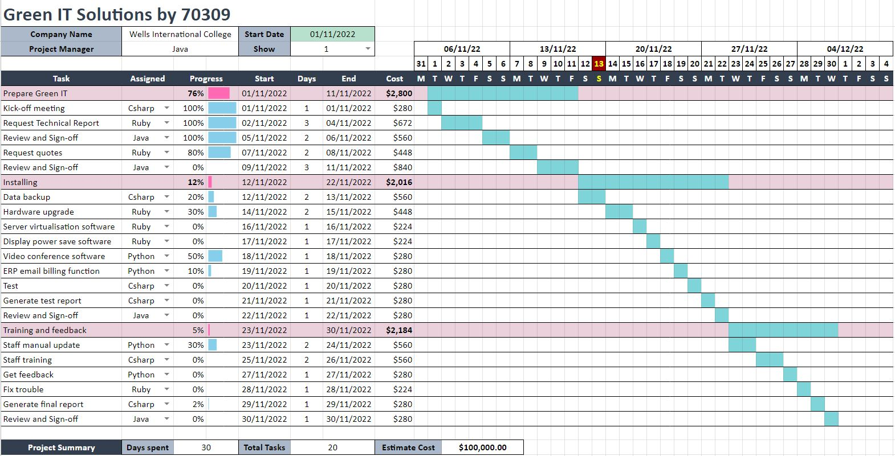

A manufacturer company is trying to implement Green IT to their business in order to cut costly waste and reduce the impact on the environment. The project duration is set to 16 months and the budget of $1,200,000 is allocated. The expected number of users is 50. Their goal is to accomplish implementing 12 solutions, which includes:
A number of solutions have been suggested for the Green IT project. However, some of them are not suitable for Wells International College, because of the differences in their nature and conditions of business.
1. Introduction (Select one recommendation from Task 2 for implement project plan)
Implementation of Green IT solutions to WIC
Green IT (green information technology) is the practice of environmentally sustainable computing. Green IT aims to minimize the negative impact of IT operations on the environment. However, these practices do not only reduce environmental impact but also help business to save cost and energy. In addition, it will grow brand reputation and attract new customers who are interested in pollution issues. Therefore, I suggest to implement following Green IT solutions to all departments of WIC.
2. Information gathering plan and approach
Green IT (green information technology) is the practice of environmentally sustainable computing. Green IT aims to minimize the negative impact of IT operations on the environment. However, these practices do not only reduce environmental impact but also help business to save cost and energy. In addition, it will grow brand reputation and attract new customers who are interested in pollution issues. Therefore, I suggest to implement following Green IT solutions to all departments of WIC.
3. Detail of information repositories
This project related files will be stored both with physical files (5years) and digital means in the data centre.
4. Feasibility studies
Technical feasibility studies will be conducted by external Green IT experts. Operational and economic feasibility test will be conducted internally.
5. Project plan and schedule (Development and Maintenance)
Project schedule is as shown in the Gantt Chart below.
Team members will have a meeting once a week to report status, identify issues and check milestone. Schedule management application (Asana) will be used for general schedule management and messaging.
Staff training will be conducted after implementing new systems by team leader and staff manual be updated on intranet.
6. Recourse and budget
The estimated cost is $100,000.
7. Contingency plan
Important data will be backed up in multiple location before implementation of new system and uninterruptible power supply (UPS) is ready in case of power outage during the backup process.
Prepare project closure document template as following: